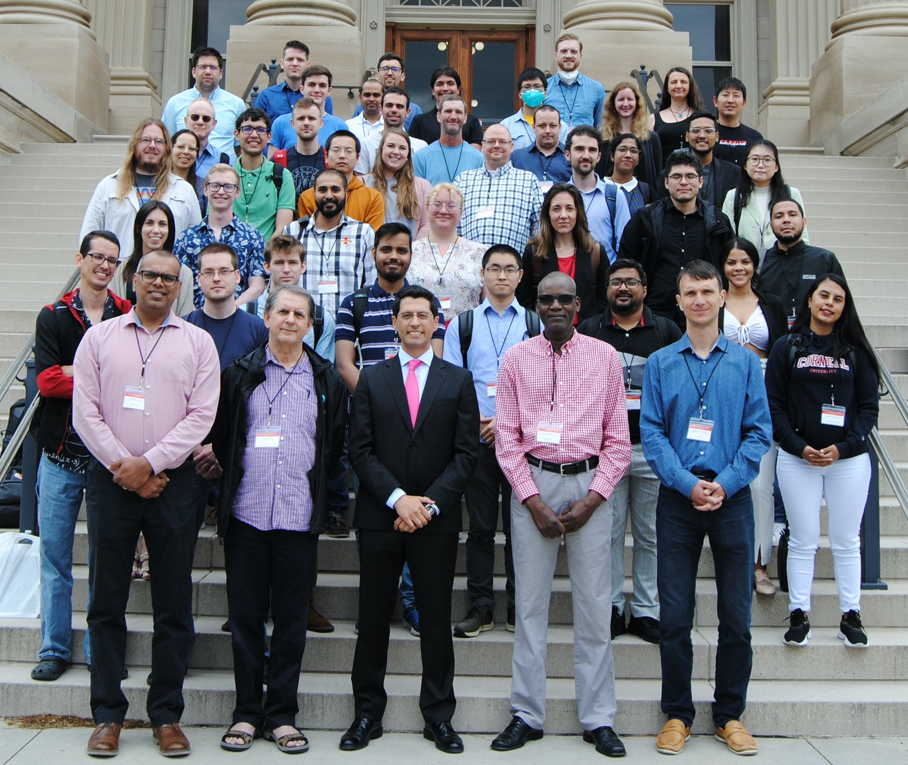
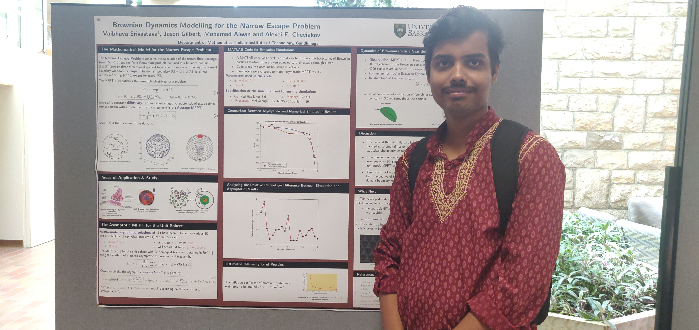
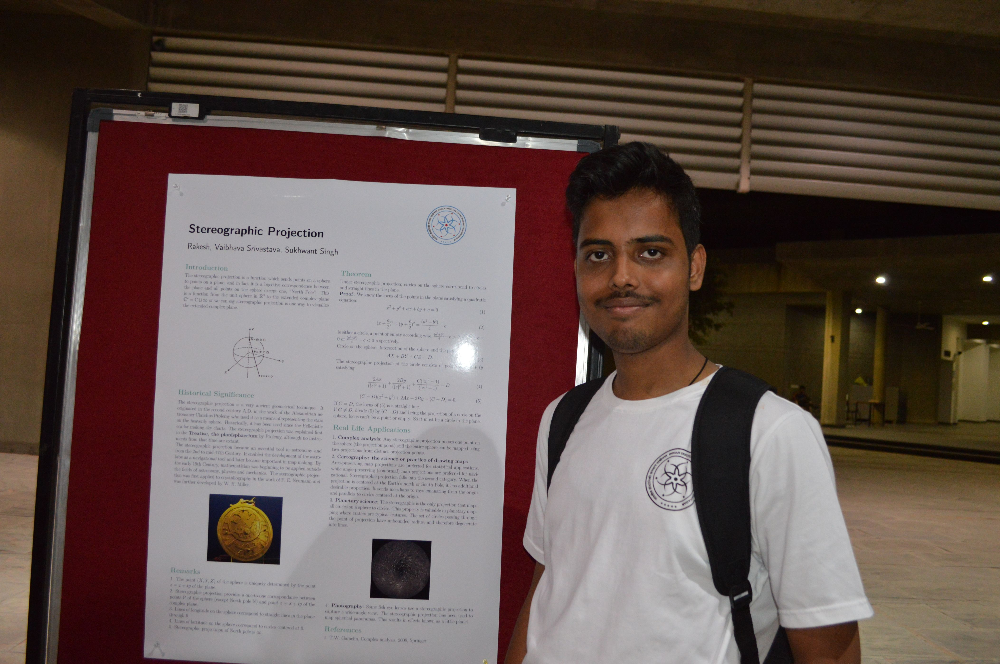
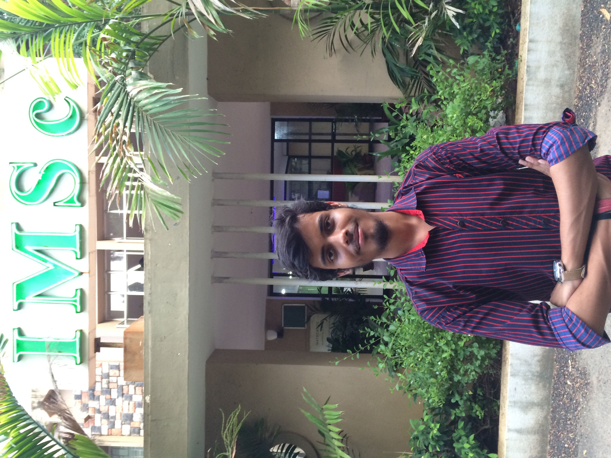
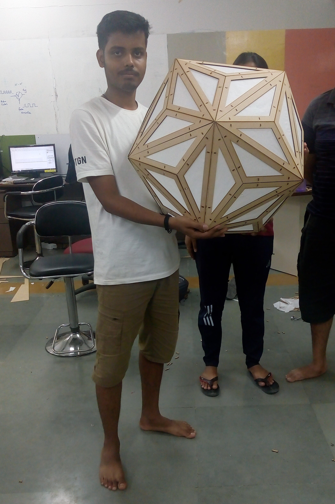

Fig. - Nonlocal School on Fractional Equations NSFE 2022, Iowa State University, USA.

Fig. - SURI-2019, University of Saskatchewan, Canada.Fig. - SPIM-2018, Harish-Chandra Research Institute, India.

Fig. - Pi Day-2019, Indian Institute of Technology Gandhinagar, India.

Fig. - IAS-SRFP 2016, Institute of Mathematical Sciences, Chennai,, India.Fig. - Delhi University Innovation Project ANDC 304, University of Delhi, India.

Fig. - Designing of 3-D Geodesics, the Icosahedron at the Indian Institute of Technology Gandhinagar, India.